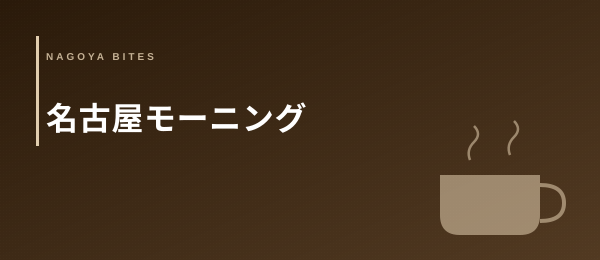

☕ 喫茶・モーニング文化
名古屋モーニング おすすめ10選
【2026年版・小倉トースト・昭和喫茶・喫茶文化を業界人が厳選】
名古屋モーニングは「文化」として語られることが多いが、業界人の目で見ると「喫茶店経営モデルの完成形」でもある。コーヒー代で食事をつけることで来店頻度と滞在時間を最大化し、午前中の回転率を上げるという設計——これが全国に先駆けて名古屋で確立された。モーニングの充実度・空間のくつろぎ感・名古屋らしさという3軸で、観光客向けではなく地元民が通う10軒を業界人視点で厳選した。
Editor's Note — この特集の3つの選定軸
- モーニングの充実度（量・種類・価格）：コーヒー1杯でどこまでつくか。トーストの種類・厚さ・バターの質、卵の調理法（茹で卵・目玉焼き・スクランブル）、サラダ・フルーツのレベル。「出てきた瞬間に嬉しい」と感じる充実度があるかどうかを最初の軸にした
- 空間とくつろぎ感（時間が豊かに流れるか）：椅子の座り心地・照明・音楽の音量・客同士の距離感・喫煙状況。「1時間いても苦にならない」が合格ライン。喫茶店は「ただ食べる場所」ではなく「滞在する場所」であるという設計思想を評価した
- 名古屋ローカルらしさ：地元客の比率・創業年数・店主の人柄・昭和喫茶の面影があるか。観光客向けに最適化されていない「本物の名古屋の喫茶店」かどうか。この軸こそが、ガイドブックには載らない名店を見つける業界人のフィルターだ
名古屋の喫茶店密度は全国1位——これは単なる数字ではなく、この都市における「喫茶店の意味」を反映している。東京の人間が「カフェでコーヒーを買って外に出る」という使い方をするのに対し、名古屋の市民は喫茶店に「居る」ために行く。新聞を読む・仕事仲間と話す・一人で考える——喫茶店がそれぞれの「根城」として機能しているのが名古屋の文化的特徴だ。モーニングはその「居る」文化を午前中に最大化するための装置として進化してきた。
飲食業を経営する立場からモーニング文化を見ると、そこには精緻な経営設計が見える。コーヒー代480〜600円でトースト・卵・サラダをつけることは、一見すると原価率が高すぎる。しかし朝7時〜11時という「昼の仕込み前の閑散時間帯」を有効活用し、回転率を上げながら常連客の来店習慣を形成するというモデルは、固定費を分散させる上で極めて合理的だ。「モーニングで来た客が昼・夕方も来る」という連鎖が、名古屋喫茶の経営を支えている。
01 — 厳選10軒
コメダ珈琲の発祥地・名古屋市西区近くのDNAを最も濃く継承するエリアの一店。1968年創業という歴史が全国チェーンに育った現在も、ゆったりとした木の椅子・仕切りのある半個室感覚の座席配置・遮音性の高い空間設計に反映されている。モーニングはドリンク代だけでトースト（小倉あん付き）+茹で卵が選べる王道スタイル。小倉トーストは厚切りホイップ版「小倉あんバタートースト」との二択がある。チェーン店でありながら「本場のコメダ体験」として、名古屋モーニング文化の入口として評価が高い。
「コメダは今や全国チェーンだが、名古屋で食べるコメダのモーニングには固有の文化的重みがある。地元の常連が新聞を広げて1時間以上いるあの空気——それこそが名古屋喫茶の本質だ。」
今池エリアで昭和の時間が止まったような佇まいを持つ個人経営喫茶の代表格。外観は昭和40年代のままで、引き戸を開けると木の板張りカウンター・色あせたメニュー板・今も動いているアナログ時計が迎える。客の9割は顔なじみの地元常連で、店主とのカウンター越しの会話が朝のルーティンの一部になっている。モーニングは厚切りトースト+小倉あん+茹で卵+お漬物という名古屋の正統派。コーヒーは深煎りで苦みがしっかりある昭和喫茶特有の味わいだ。「本物の名古屋の喫茶店」を体験したいなら、ここを外せない。
「今池のボンボンに初めて入ったとき、隣の常連客が『いつもの』と言っただけでコーヒーが出てきた。その2秒の関係性が、喫茶店文化の核心だと思った。」
名古屋グルメの文脈で語る際に外せない唯一無二の存在。モーニング自体はトースト+茹で卵の標準形だが、昼以降に出る「甘口焼きそば」「甘口スパゲッティ」という独自すぎるメニューで全国的な知名度を誇る。昭和レトロの内装・手書きのメニュー・変わらない接客——全てがこの店の「独自性」として機能している。地元名古屋人の「一度は連れて行く店」として確固たる地位を持ち、県外からの知人を案内する際の定番でもある。モーニングも十分に充実しているが、この店を選ぶ理由は「名古屋でしか存在しえない空気」そのものだ。
「マウンテンのモーニングはごく普通なのだが、この店の前でコーヒーを飲むこと自体が体験になっている。料理の話をする前に、まずその場の圧倒的な個性に気圧される。これを経営学的に分析するのは難しい。」
覚王山エリアの住宅地に静かに佇む自家焙煎の個人喫茶。外から見ると民家と見紛うほどの目立たない外観が、地元に根付いた存在感を象徴している。自家焙煎のコーヒーはコクと甘みのバランスが取れた中深煎りで、朝の一杯として申し分ない。モーニングのトーストは食パンを厚切りにして丁寧に焼き上げたもので、バターの塗り方にも気遣いがある。卵は茹で卵・目玉焼きから選択可能。照明はやや暗めの落ち着いた設定で、BGMはジャズの音量が会話の邪魔にならない程度に抑えられている。「覚王山で時間を持て余したら必ず寄る」という地元の常連が支える一軒だ。
「自家焙煎の喫茶店でモーニングを出す店は珍しい。コーヒーに本気の店がモーニングもやっているという事実が、この店の質の基準を全体に引き上げている。」
名古屋で独自展開するコーヒーチェーン「珈琲舘」の本拠地的な一店。チェーン店でありながら個人喫茶に近い落ち着きのある空間設計が特徴で、全席禁煙という点が喫煙が苦手な層や観光客に評価されている。モーニングはドリンク代のみでトースト・茹で卵・サラダの三点セットが基本。コーヒーのブレンドは複数のロースト度合いから選択でき、朝の気分に合わせて「今日はすっきりとした浅煎りを」という選び方が可能だ。スタッフのサービスが丁寧で、初めての来店でも案内がわかりやすい。名古屋モーニングの「安心して紹介できる一軒」として地元の飲食人が挙げる頻度が高い。
「チェーン店をあえて選ぶ理由は再現性の高さだ。珈琲舘の千種本店はその中でも特に店舗の質が安定しており、初めて名古屋モーニングを体験する人に自信を持って勧められる。」
本山エリアの住宅街に構えるフランス風の喫茶店。「コラン」はフランス語で「丘の斜面」を意味し、内装は白壁・アンティーク家具・ワインレッドのカーテンというパリのビストロを彷彿とさせる設計だ。名古屋モーニングにクロワッサンを持ち込んだ先駆的な一店として業界内での認知が高く、バターの風味豊かな自家製クロワッサン+ポーチドエッグ+サラダという他の名古屋喫茶にはない独自構成が評価されている。地元の知識階層・大学教員・美術関係者などに長年愛されており、午前中の静かな客層が「知的な喫茶体験」を演出している。昭和レトロではなく「洗練された喫茶」を選ぶなら、名古屋でここが筆頭候補になる。
「名古屋のモーニング文化にフランス喫茶の文脈を持ち込んだ店として評価している。クロワッサンの質が喫茶のコーヒーに引け目を感じさせない水準なのは、パン仕入れと焼成温度への本気度の表れだ。」
1940年創業の京都老舗珈琲店が名古屋・栄エリアに展開する一店。「アラビアの真珠」と称されるブレンドコーヒーは砂糖とミルクを最初から入れて提供するという独自スタイルで全国的に知られる。名古屋店のモーニングはトースト+ゆで卵という基本形ながら、パンの質とバターの丁寧さが他の喫茶とは一線を画す。インテリアは京都本店の格式をそのまま移植したような重厚感があり、栄という繁華街にありながら「喧騒の外」に来たような静粛性を保っている。出張で名古屋を訪れるビジネスマンが「名古屋でモーニングをするなら」と選ぶ信頼の一軒で、京都のブランド価値と名古屋のモーニング文化が融合した特別な体験を提供する。
「イノダのコーヒーは最初から砂糖とミルクが入っている。その作法に反発する人もいるが、その一貫した流儀こそがブランドの核心だ。名古屋でその一杯を飲む体験は、旅のハイライトになりうる。」
大曽根・千種エリアの下町に溶け込む昭和喫茶の正統派。「OB」という名前は「オールドボーイ」に由来するとも言われ、創業から変わらないカウンター席での常連との会話が店の主役になっている。モーニングはコーヒー代だけでトースト・茹で卵・お漬物という名古屋の基本スタイル。卵は注文を受けてから茹でる作り立てスタイルで、殻を剥くという手間が「朝時間をゆっくり使う」という喫茶の哲学と合致している。マスターは60代後半で、常連客との会話の内容が「地元の人間観察ドキュメンタリー」のように面白い。飲食業界の人間が「取材に行きたい喫茶店」として挙げる頻度が高い一軒だ。
「珈琲屋OBのカウンターで朝1時間過ごすと、大曽根エリアの人間模様が見えてくる。常連がマスターに話す近所の出来事・仕事の愚痴・家族の話——それが喫茶店の本当の機能だ。」
京都発祥のスペシャルティコーヒー専門店が名駅エリアに展開する一店。名古屋のモーニング文化に「スペシャルティコーヒーの文脈」を持ち込んだ存在として業界内での評価が高い。モーニングの充実度は今回の10選の中でも最高水準で、厚切りトースト+自家製スプレッド（バター・小倉あんから選択）+スクランブルエッグ+彩り野菜のサラダ+フルーツという構成はドリンク代のみとは信じがたい豪華さだ。コーヒーはシングルオリジン豆を毎月入れ替えるスペシャルティスタイルで、産地の違いを「飲み比べ」として楽しめる。全席禁煙・WiFi完備で出張中のビジネスパーソンが朝の仕事場として使うケースも多い。
「モーニングの原価率を考えると、小川珈琲の構成は正直驚く。スペシャルティコーヒーの価値でドリンク代を設定し、モーニングの豪華さで差別化する——これが名古屋の競争環境の中で生き残るための設計だ。」
覚王山から少し歩いた住宅街の一角に構える、業界人の間では「名古屋喫茶の理想形」として語られる個人経営の一軒。築40年以上の建物に木の家具・アンティークの食器棚・小さな窓から差し込む朝の光という空間が、「時間が豊かに流れる」という喫茶の本質を体現している。モーニングは「小倉トースト一択」という潔いスタイルで、厚切り食パンに自家製の小倉あんとバターを惜しみなく塗るシンプルさが際立つ。コーヒーは中深煎りのブレンドで、苦みと甘みのバランスが小倉あんとの相性を意識して調整されているように感じられる。地元の食通・料理人・デザイナーが「自分の喫茶店」として通う場所として知られており、常連の質が喫茶文化の奥行きを象徴している。
「ツヅキは喫茶の答えが全部詰まっている。良い椅子・良いコーヒー・良い小倉トースト・余計な音のない空間——この四つだけで、人は1時間以上居られる。喫茶の経営とはシンプルさの極限化だと思わされる。」
名古屋モーニング文化の経済学
名古屋の喫茶店密度が全国1位であることは広く知られているが、なぜ名古屋の喫茶店だけがモーニングサービスを60年以上持続できているのかを経営の観点から分析すると、実に精緻な設計が見えてくる。
「無料」の錯覚と原価率の現実——コーヒー代480〜600円でトースト・卵・サラダを提供することは、表面上は原価率が異常に高く見える。しかし実際の食材原価を計算すると、食パン（1枚15〜20円）・卵（1個20〜30円）・サラダ（30〜50円）の合計は70〜100円前後に収まる。これをドリンクの原価率（コーヒー豆+オペレーション）に加算しても、全体の原価率は40〜50%の範囲内に留まる。喫茶の席は「空間を売る」ビジネスモデルであり、1時間の滞在に500円を払う客が来ることで、空間の固定費（家賃・光熱費・人件費）が分散される。
回転率と滞在時間のバランス設計——ファストフードは回転率を最大化するために椅子を硬くする。名古屋の喫茶は逆の設計を選んでいる。ゆったりとした椅子・仕切りのある席配置・大きめのテーブル——これらは滞在時間を伸ばすための意図的な選択だ。客が1時間以上いることで「この喫茶店に行くと落ち着く」という記憶が形成され、来店頻度が上がる。朝のモーニングで来た客が昼食にも立ち寄る「1日複数回来店モデル」が成立している喫茶店も多く、これが名古屋喫茶の収益基盤を安定させている。
地元民が朝の「根城」を持つ文化的背景——名古屋には「名古屋人は家を大切にする」という特性として知られる独自の文化がある（新築比率・持ち家率・リフォーム頻度が全国上位）。この「家の延長としての空間」という感覚が喫茶店にも投影されており、「自分の喫茶店」を持つという習慣は名古屋市民のアイデンティティの一部だ。喫茶店は「外食」ではなく「もう一つのリビング」——この認識の違いが、名古屋においてモーニング文化が消費者に受け入れられ続けている本質的な理由だと言える。
業界人流 名古屋モーニングの選び方と楽しみ方
- 初めての店では開店直後（7〜8時台）に行く——常連の動き方と店の雰囲気がそのまま出る「素の状態」が見える
- カウンター席を選ぶ——テーブル席に座ると見えない店主との距離感・会話の流れが、喫茶体験の深さを決める
- 小倉トーストを選ぶ際は「バターは厚めで」と一言添える——多くの昭和喫茶では気前よく対応してくれる
- コーヒーは追加注文するのが名古屋流——モーニング中に「もう一杯」を頼む文化があり、2杯目は割引になる店も多い
- 土日の9〜10時台は混む——週末のモーニングを楽しみたいなら8時台の入店が快適
- 昭和喫茶は「無言でいられる空気」があるのが品質の証——強引に話しかけてこない店主こそ信頼できる
- 喫煙席・禁煙席の選択は事前確認が無難——名古屋の老舗喫茶は喫煙可の店が多く、煙が苦手なら禁煙対応店（珈琲舘・小川珈琲等）を優先する